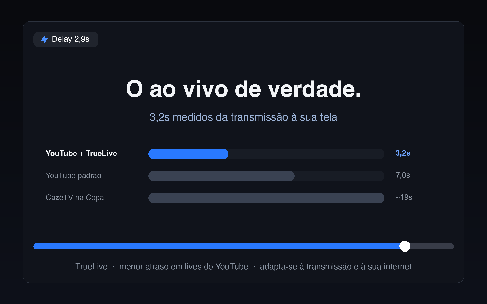

O gol, 3 segundos depois do estádio.
Não 20.
O YouTube te segura vários segundos atrás do ao vivo de propósito. O TrueLive elimina esse excesso e te deixa no menor delay que a transmissão e a sua internet permitem — medido de verdade, no player.
Grátis · Código aberto (GPL-3.0) · Zero coleta de dados · Funciona em Chrome, Edge, Brave, Opera e Firefox
Simulação em tempo real com os delays medidos — você sente a diferença esperando junto.
Medido, não prometido
Comparamos na mesma máquina, na mesma live, com o relógio de ingestão do próprio player. Delay do lance até a sua tela:
Que delay VOCÊ vai ter?
Sinceridade primeiro: o delay mínimo não depende só de nós — depende de como o canal transmite. Quem escolhe a "classe de latência" é o streamer:
| Como o canal transmite | Piso físico | Com TrueLive você fica em |
|---|---|---|
| Ultra-baixa latência | ~2-5s | ~3-4s — nível TV aberta |
| Baixa latência (CazéTV, esports, a maioria) | ~5-10s | ~3-4s — nível TV aberta |
| Latência normal (padrão do YouTube) | ~10-30s | o piso da stream (~10s+) |
Por que não dá pra ir além? Em latência normal, o vídeo mais novo nem chegou ao seu computador antes de ~10s — não existe mágica que fure esse piso, e quem promete o contrário está mentindo. O que o TrueLive garante: você sempre no menor delay que aquela transmissão permite. O badge no player mostra seu delay real, medido — se marca 10s num canal de latência normal, você já está no mínimo possível.
Como funciona
Você não configura nada. Liga o Super Ao Vivo e ele cuida do resto:
Mede o delay de verdade
Usa o relógio interno do player pra saber exatamente quantos segundos você está atrás do ao vivo — e mostra num badge discreto, se você quiser.
Cola na borda do vivo
Parte do vídeo "do futuro" já está baixada no seu computador. O TrueLive reposiciona a reprodução nessa borda — por isso chega mais perto que qualquer extensão que só acelera o vídeo.
Se protege sozinho
Mede a "respiração" da sua conexão e mantém a distância segura. Se a internet oscilar, ele recua na hora — a velocidade nunca cai e o vídeo não trava. Internet fraca de verdade? Ele mesmo se suspende e volta quando dá.

Instalar (2 minutos, sem conhecimento técnico)
✓ Se você sabe baixar um arquivo e dar dois cliques, você consegue.
- Baixe o TrueLive aqui — clique no arquivo
truelive-1.0.0.zip. Ele vai pra sua pasta de Downloads, como qualquer arquivo. - Encontre o arquivo baixado e dê dois cliques nele. Isso cria uma pasta chamada "truelive". Ela precisa continuar existindo — não apague depois.
- No Chrome, copie e cole isto na barra de endereço (onde você digita sites) e aperte Enter:
chrome://extensions - No canto superior direito dessa página, ligue a chavinha "Modo do desenvolvedor". É só um nome assustador — não muda nada no seu Chrome.
- Clique no botão "Carregar sem compactação" que apareceu, e escolha a pasta "truelive" do passo 2.
- Pronto! Abra uma live no YouTube, clique no ícone de quebra-cabeça 🧩 no topo do Chrome e fixe o ⚡ TrueLive. Clique no ⚡ e escolha "Super Ao Vivo". O badge no player mostra seu delay caindo.
- Baixe o TrueLive aqui — clique no arquivo
truelive-1.0.0.zip. - Dê dois cliques no arquivo baixado pra criar a pasta "truelive". Não apague essa pasta depois — a extensão vive nela.
- Cole na barra de endereço e aperte Enter — no Edge:
edge://extensions· no Brave:brave://extensions· no Opera:opera://extensions - Ligue o "Modo do desenvolvedor" (chavinha no canto da página).
- Clique em "Carregar sem compactação" e escolha a pasta "truelive".
- Pronto! Abra uma live, fixe o ⚡ TrueLive na barra e escolha "Super Ao Vivo".
- No Firefox, a instalação segura é pela loja oficial — nossa versão está em análise pela Mozilla. O Firefox exige que toda extensão seja assinada por eles, mesmo instalando por fora — é proteção sua, e nós seguimos a regra.
- Assim que aprovar, o botão aqui vira "Adicionar ao Firefox" — 1 clique e pronto.
- Não quer esperar? Use a versão do Chrome/Edge/Brave acima enquanto isso.
Grátis pra sempre. Se ajudou, me pague um café ☕
O TrueLive é feito por uma pessoa, de graça e com código aberto. Doação via PIX — você escolhe o valor no app do seu banco:
Aponte a câmera do app do banco pro QR Code, ou copie o código:
Dúvidas rápidas
Vai travar meu vídeo?
Não — essa é a regra nº 1 do produto. O TrueLive mede sua conexão o tempo todo e mantém uma reserva de segurança que se adapta sozinha. Se a internet aperta, ele recua um pouco na hora (você quase não percebe) em vez de deixar travar. Se a conexão está ruim de verdade, ele se suspende sozinho por 10 minutos.
A qualidade do vídeo cai?
Não. O TrueLive não mexe em resolução nem em qualidade — só na distância entre você e o ponto mais recente da transmissão.
Vocês coletam meus dados?
Zero. A extensão não faz nenhuma conexão externa, não tem cadastro, não tem analytics. Tudo acontece no seu navegador. O código é aberto (GPL-3.0) — qualquer pessoa pode conferir.
Por que ainda tem 3 segundos? Não dava pra ser 0?
Não — nem a TV aberta é 0 (ela tem ~3-5s do estádio até sua antena). O sinal precisa sair do estádio, ser codificado, subir pro YouTube e chegar até você. Os ~3s são o limite físico do caminho — e é exatamente nele que o TrueLive te coloca.
Funciona em qualquer live?
Funciona em qualquer live do YouTube. O delay mínimo depende de como o canal transmite (veja a tabela acima): em canais de baixa latência você fica em ~3-4s; em canais de latência normal, o piso é ~10s+ pra todo mundo — o TrueLive te garante o mínimo dali. Twitch e outras plataformas estão no roadmap.
É seguro? Como confio?
O código é 100% aberto e auditável no GitHub, a extensão pede uma única permissão (armazenar suas preferências) e não acessa nada fora do player do YouTube.